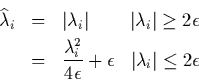

CONTENTS
This page lists new features in CFL3D Version 6. Because there is no Version 6 Manual, this page is very important because it supplements the Version 5 Manual by listing additional/changed features and capabilities of CFL3D. Of particular importance is the capability of "Keyword Driven Input," which is an optional section near the top of the standard CFL3D input file. See also the CFL3D Tutorial.
A number of users have requested that some standard constants, such as gamma (specific heat ratio), be specified via the input file. Because space is getting very tight in the input file, additional input is now accomodated via a "keyword driven" input. If used, the keyword driven input section must appear after the last input file name and before the case title. The keyword input section must begin with a line that has > in the first column (other characters may follow) and must end with a line that has < in the first column (other characters may follow).
The following example illustrates the use of the keyword input:
INPUT/OUTPUT FILES:
/net/aamber/scratch2/biedron/Multi/grid2.p3dunf
plot3dg.bin
plot3dq.bin
cfl3d.out
cfl3d.res
cfl3d.turres
cfl3d.blomax
cfl3d.out15
cfl3d.prout
cfl3d.out20
ovrlp.bin
patch.bin
restart.bin
>-- begin keyword-driven input section
gamma 1.30
pr 0.75
<-- end keyword-driven input section
Case Title
MACH ALPHA BETA REUE TINF,DR IALPH IHSTRY
0.95000 2.50000 0.00000 0.000E+00 393.00000 1 0
etc...
In the example, additional characters are included after the required keyword section delimiters > and < in order to make the section stand out a bit more.
Note that the format is the keyword followed by the value you want the keyword variable to assume, without an equal sign. If a keyword variable is not specified, it will retain its default value. The following keywords are currently supported:
| Name | Description | Default Value |
|---|---|---|
| cbar | ref. temp. for Sutherland Law | 198.6 |
| gamma | ratio of specific heats | 1.4 |
| pr | Prandtl number | 0.72 |
| prt | turbulent Prandtl number | 0.90 |
| Name | Description | Default Value |
|---|---|---|
| atol | tolerence for detecting singular lines | 10-7 |
| epsa_r | eigenvalue limiter (entropy fix for improving robustness of high M flows) |
0.0 |
| Name | Description | Default Value |
|---|---|---|
| avn | factor multiplying uref2 for preconditioning | 1.0 |
| cprec | relative amount of preconditioning | 0.0 |
| uref | limiting velocity for preconditioning | xmach |
| Name | Description | Default Value |
|---|---|---|
| cltarg | target Cl | 99999. |
| dalim | limit of alpha change (deg) per update | 0.2 |
| icycupdt | number of cycles between alpha updates (if >0; if <0, alpha is never updated) |
1 |
| rlxalph | relaxation factor used to update angle of attack | 1.0 |
| Name | Description | Default Value |
|---|---|---|
| cflturb1, cflturb2, etc. | cfl no. for turb. eqn. #n = cflturbn x |dt| if cflturbn > 0 (available after V6.5) (note: old generic cflturb no longer used after V6.5) |
0.0 (model-dependent default) |
| edvislim | limiter for eddy viscosity in 2-equation turb models; eddy viscosity limited to edvislim times the laminar viscosity |
1 x 10^(10) (changed after V6.4 from 100000 to avoid erroneous cut-off in jets and for full-scale simulations at high Re.) NOTE: This cut-off may need to be re-specified by user to be 100000 or so to prevent blow-ups during initial start-up, esp for 2-eqn models. |
| ibeta8kzeta | flag (0/1) to set beta8 term when using k-enstrophy turbulence model (ivisc=15); 0 = use beta8=0.0 (helps avoid numerical problems); 1 = use beta8=2.3 (available after V6.3) |
0 |
| ides | flag to perform DES with SA turbulence model (ivisc=5) or with k-omega or SST turbulence model (ivisc=6 or 7) (usage with 6 or 7 available after V6.5) 0=no DES, 1=std DES, 2=DDES (TCFD 20:181-195, 2006) 3=modified DDES with turb prod OFF in LES region (2 and up available after V6.5) |
0 |
| cdes | constant associated with DES | 0.65 |
| cddes | constant associated with Modified DDES (ides=3) helps determine how far away from walls is cutoff (available after V6.5) |
0.975 |
| ieasmcc2d | flag (0/1) to turn on 2-D curvature correction when using EASM models (ivisc=8,9,11,12,13,14) (available after V6.3) |
0 (no correction) |
| isarc2d | flag (0/1) to turn on 2-D curvature correction when using SA model (ivisc=5) Note: does not account for system rotation (available after V6.3) |
0 (no correction) |
| isarc3d | flag (0/1) to turn on 3-D curvature correction when using SA model (ivisc=5) Note: does not account for system rotation (available after V6.5) |
0 (no correction) |
| sarccr3 | value of cr3 parameter in SARC model (available after V6.3) |
0.6 (prior to V6.6) 1.0 (after V6.6) |
| isar | flag (0/1) to turn on Dacles-Mariani correction to the SA model (ivisc=5) (available after V6.5) |
0 (no correction) |
| crot | value of constant in Dacles-Mariani correction (available after V6.5) |
2.0 |
| ikoprod | flag: 0=use approximate (vorticity-based) turb production term (-2*mut*WijWji) for turb models 6, 7, 10, or 15; 1=use strain-rate based term (2*mut*SijSij); 2=use full production term (ivisc=15 only) (1, 2 not recommended if there is stagnation point) (available after V6.3) |
0 (vorticity-based production) |
| isstdenom | flag (0/1): 0=use vorticity term in denominator of eddy viscosity in SST model (#7); 1=use strain term (available after V6.3) |
0 (vorticity term) |
| itaturb | flag (0/1) to control time accuracy of turb. model; 0 for 1st order in time regardless of parameter "ita" for the mean flow; 1 for same order as set by ita |
1 (turb. time accuracy same as mean flow, set via ita) |
| iturbord | flag controls whether turbulence model advection terms are 1st or 2nd order upwind on RHS (1=1st, 2=2nd) (note: LHS uses 1st order in both cases) (available after V6.3) |
1 (1st order) |
| iturbprod | flag: 0=use strain-rate based turb production term (2*mut*SijSij) for EASM turb models 8, 9, 13, or 14; 1=use full production term |
0 (strain-rate based term) |
| nfreeze | freeze turb. model for nfreeze cycles | 0 (not frozen) |
| nsubturb | number of iterations of turb model per cycle | 1 |
| pklimterm | factor used to limit production of k in 2-eqn turb models (chooses min of Pk and pklimterm*Dk); make this term large for no limiting (available after V6.3) |
20.0 |
| cmulim | limits the abs min computed value of variable cmu for EASM (ivisc=8,9,13,14); higher values may avoid kinks in supersonic B.L.s on fine grids; should never be set higher than 0.04 or so; (available after V6.6) |
0.0005 |
| tur10, tur20, etc. | turbulent quantity freestream levels < 0 use default value (different for each turb model, see manual Appendix H) >=0 use this number as the specified user input value |
-1.0 |
| tur1cut | value that nondimensional epsilon (or omega or enstrophy or kL) is reset to when it tries to drop equal to or below tur1cutlev; if <=0 then no update occurs when value tries to drop equal to or below tur1cutlev (available after V6.3) |
1.e-20 for all models except -1.0 for ivisc=15 |
| tur2cut | value that nondimensional k is reset to when it tries to drop equal to or below tur2cutlev; if <=0 then no update occurs when value tries to drop equal to or below tur2cutlev (available after V6.3) |
1.e-20 |
| tur1cutlev & tur2cutlev |
lower levels of nondimensional epsilon (or omega or enstrophy or kL) and k which, when reached, cause the turb quantities to be reset to tur1cut or tur2cut (available after V6.3) |
0.0 |
| i_bsl | when set to 1, turns on Menter's BSL model (rather than default SST) when ivisc=7 in input file (available after V6.4) |
0 |
| keepambient | when set to 1, maintains freestream turbulence levels for two equation turbulence models (ivisc=6-14) (currently not applicable for ivisc=15) (available after V6.4) |
0 |
| re_thetat0 | used for transition model (ivisc=30) < 0 use the default computed value of 400 Tu-5/8 >= 0 use this number as the specified user input value (available after V6.5) |
-1.0 |
| turbintensity_inf_percent | freestrem turb intensity, in percent setting this will override any value set for tur20 this has no effect on tur10 (available after V6.5) |
-1.0 |
| eddy_visc_inf | freestrem mu_t/mu_inf setting this will override any value set for tur10 this has no effect on tur20 (available after V6.5) |
-1.0 |
| cs_smagorinsky | the (non-dynamic) Smagorinsky constant for LES (ivisc=25 and les_model=1) if set to zero, you get implicit LES (no model) typical values are 0.1-0.2 (available after V6.5) |
0.0 |
| i_wilcox06 | (0/1) change Wilcox88 model (ivisc=6) to Wilcox06 (available after V6.5) |
0 |
| i_wilcox06_chiw | (0/1) turn off/on Wilcox06 vortex stretching parameter only has effect if ivisc=6 and i_wilcox06=1 (available after V6.5) |
1 |
| i_wilcox98 | (0/1) change Wilcox88 model (ivisc=6) to Wilcox98 (available after V6.6) |
0 |
| i_wilcox98_chiw | (0/1) turn off/on Wilcox98 vortex stretching parameter only has effect if ivisc=6 and i_wilcox98=1 (available after V6.6) |
1 |
| i_turbprod_kterm | (0/1) determine whether 2/3*rho*k term gets subtracted from turb production in ivisc=6,7 models (only does anything if ivisc=6 or 7, ikoprod=1, and i_turbprod_kterm=1) (available after V6.5) |
0 |
| i_catris_kw | (0/1) alters the k-omega turb diffusion terms (in ivisc=6, 7, 8, 12, or 14) to include density (compressibility) effects (Aerosp Sci Technol. 4 (2000) 1-11) (available after V6.5) |
0 |
| ismincforce | overrides normal smin/initvist restart usage -1 do not override normal usage 0 do not compute smin, do not call initvist 1 compute smin , call initvist 2 compute smin , do not call initvist 3 do not compute smin, call initvist (available after V6.5) |
-1 |
| prod2d3dtrace | forces Sij used in 2SijSij to be traceless in production term in ivisc=6,7,10,30 when ikoprod=1, and in Wilcox06 stress-limiter term; should be set to 0.5 in 2-D, 0.333333 in 3-D (available after V6.5) |
0. |
| i_compress_correct | adds dilatation-dissipation type compressibility correction, currently for ivisc=6 or 7 only 0 no correction 1 Wilcox-type (Turbulence Modeling for CFD, ed 3, p. 258) 2 Zeman-type for boundary layers (AIAA 93-0897) (available after V6.5) |
0 |
| les_model | determines LES subgrid model to use with ivisc=25 0 no model 1 standard Smagorinsky model 2 WALE model (Flow, Turb, & Combust 62:183-200 1999) 3 Vreman model (Phys Fluids 16(10):3670-3681 2004) (available after V6.5) |
0 |
| les_wallscale | (0/1) turns off/on van Driest type wall scaling of Delta in LES model; only used in conjunction with Smagorinsky model (les_model=1) (available after V6.5) |
0 |
| cs_wale | non-dynamic WALE constant for LES (ivisc=25 and les_model=2) if set to zero, you get implicit LES (no model) typical values are 0.45-0.6 (available after V6.5) |
0.0 |
| cs_vreman | non-dynamic Vreman constant for LES (ivisc=25 and les_model=3) if set to zero, you get implicit LES (no model) typical values are 0.025-0.1 (available after V6.5) |
0.0 |
| isstrc | curvature correction for ivisc=6 or 7 0 = no correction 1 = AIAA 98-2554 and J. Aircraft 41(2):268-273 2004 (available after V6.5) 2 = ASME Journal of Turbomachinery 131(10):041010 2009 (available after V6.6) |
0 |
| sstrc_crc | constant for use with isstrc=1 (available after V6.5) |
1.4 |
| isstsf | (0/1) turns off/on ad hoc separation fix (ivisc=6 or 7) (available after V6.5) |
0 |
| scal_ic | scaling factor for 2-eqn model BL-type approx ICs smaller no. makes IC profile thinner 0 uses freestream ICs everywhere (available after V6.5) |
5.e6 |
| i_nonlin | (0/1) turns off/on nonlinear quadratic constitutive relation when using linear models (ivisc=2,3,4,5,6,7,10,15) (available after V6.5) |
0 |
| c_nonlin | constant for use with i_nonlin=1 (available after V6.5) |
0.3 |
| snonlin_lim | limiter for use with i_nonlin=1 (limits the denominator vel deriv term) (available after V6.6) |
1.e-10 |
| iaxi2planeturb | flag to force solve of field turb eqns in j-k plane only (for i2d=0 and idim=2) (see also iaxi2plane) 0=include i-dir; 1=ignore i-dir (available after V6.6) |
0 |
| istrongturbdis | flag to solve turb dissipation terms with strong conservation 0=weak cons.; 1=strong cons. (available after V6.6) |
0 |
| isst2003 | (0/1) turns off/on SST-2003 version (Menter et al, Turb, Heat and Mass Transfer 4, Begell House, Inc., 2003, pp. 625-632) (ivisc must = 7) (available after V6.6) |
0 |
| issglrrw2012 | flag to change stress-omega model: 0=WilcoxRSM-w2006, 1=SSG/LRR-RSM-w2012 (AIAA 2012-0465), 2=same as 1 w F1=1, 3=same as 1 w simple diffusion, 4=same as 1 w F1=1 & simple diffusion 5=same as 1 w Wilcox simple diffusion 6=(preliminary) g-eqn form of 1 (ivisc must = 72) (available after V6.6) |
0 |
| i_sas_rsm | flag to add/subtract SAS-like term to RSM omega eqn (ivisc=72) (AIAA-2014-0586) 0= not used, 1= more like SAS, -1= more eddy visc in shear layers (available after V6.6) |
0 |
| i_saneg | (0/1) turns off/on SA-neg (ivisc must = 5) (available after V6.6) |
0 |
| i_sanoft2 | when set to 1, switches SA to SA-noft2 (ivisc must = 5) (available after V6.6) |
0 |
| i_lam_forcezero | 0= standard laminar usage (prod=0 where laminar) 1= force eddy viscosity to zero where laminar (available after V6.6) |
0 |
| i_qcr2000 | invokes QCR2000 (i_tauijs must = 1) (available in github repository after 8/2019) |
0 |
| i_qcr2013 | invokes QCR2013 (limited) (i_tauijs must = 1) (available in github repository after 8/2019) |
0 |
| i_qcr2013v | invokes QCR2013-V (i_tauijs must = 1) (available in github repository after 8/2019) |
0 |
| Name | Description | Default Value |
|---|---|---|
| idef_ss | flag (0/1) to deform volume grid to surface in file newsurf.p3d |
0 (don't deform) |
| meshdef | flag (0/1) to bypass flow solution while still computing grid operations such as metrics and volumes; 0 = normal operation; 1 = bypass flow solution (available after V6.3) |
0 |
| negvol | flag (0/1) to enable/disable stop if neg. volumes/bad metrics are detected (mesh deformation debug only!) |
0 (stop for negative volumes) |
| Name | Description | Default Value |
|---|---|---|
| ibin | flag (0/1) for formatted/unformatted output plot3d files |
1 (unformatted) |
| iblnk | flag (0/1) for un-iblanked/iblanked output plot3d files |
1 (iblanked) |
| iblnkfr | flag (0/1) for un-iblanked/iblanked fringe points in plot3d files (overset grids only) |
1 (iblanked) |
| icgns* | flag (0/1) to not use/use CGNS files | 0 (don't use CGNS files) |
| ifunct | flag will output a PLOT3D function file (instead of Q-type file) only when iptype=2 in the plot3d section of the input file. There will be ifunct variables in the file. (Use of this requires hardwire mod in plot3t.F, to specify what variables are to be output.) If ifunct is large, you may run out of memory when writing and need to augment with keyword memadd. (available after V6.5) |
0 |
| ip3dgrad | flag (0/1) for solution/derivative data output to plot3d q file (complex code only) |
0 (solution to q file) |
| irghost | flag to read ghost-cell data from restart file (1) or not (0); V5 restart files and Beta V6 restart files do not contain ghost-cell data; newer V6 restart files do |
1 (read ghost-cell data) |
| iwghost | flag to write ghost-cell data to restart file (1) or not (0); V5 restart files and Beta V6 restart files do not contain ghost-cell data; newer V6 restart files do |
1 (write ghost-cell data) |
| itime2read | flag (0/1) to skip/read 2nd order (in time) turbulence terms and dt in restart file: need to skip if using an older time-accurate-with-2nd-order-time restart file |
1 (read 2nd order time turbulence terms and dt) |
| iteravg | flag to store iteration-averaged conserved variables in PLOT3D files at cell centers: 0 = no averaging or storage 1 = start averaging now 2 = continue averaging from previous run, or start averaging now if old files not available |
0 |
| ipertavg | similar functionality as iteravg, except stores primitive variables, their squares, and additional perturbation statistics at grid points (available after V6.4) |
0 |
| iclcd | keep track of CL and CD of different bodies: 0 = nothing special done 1 = use clcd.inp file for determining output 2 = same as 1, but continue previous run using file clcd.bin (if not available, will start again from scratch) (available after V6.4) |
0 |
| i2dmovie | 2D movie output control: 0 = no special 2D movie file written otherwise = no. of timesteps between 2D output (available after V6.4) |
0 |
| icoarsemovie | movie output control: 0 = no special movie file written otherwise = no. of timesteps between output (available after V6.4) |
0 |
| iskip_blocks | capability to skip blocks when using i2dmovie 1 = do not skip any blocks 2 = write every other block n = write every nth block (available after V6.4) |
1 |
| isubit_r | invokes writing subiteration residual history of all five mean flow quantities 0 = do not write otherwise = write this history to cfl3d.subit_r (available after V6.6) |
0 |
| ifort50write | 1 = writes turbulent "plus" values (to unit 50); only works with 1 zone; iptype must=2; wall must be at k=1 (available after V6.6) |
0 |
| j_ifort50write | j-value used when ifort50write=1 (available after V6.6) |
1 |
| i_ifort50write | i-value used when ifort50write=1 (available after V6.6) |
1 |
* this keyword is ineffectual unless the CFL3D system is installed with
"Install -cgnsdir=somedirectory"
(see Installation)
| Name | Description | Default Value |
|---|---|---|
| lowmem_ux | By default, after V6.5, the memory for the velocity-derivative ux array is always allocated and ux is always computed. Setting to 1 reverts to old usage (compute only when needed). |
0 (always compute ux array) |
| memadd | additional memory (in words) added to work array (in case sizer underestimates) |
0 (no addition to work) |
| memaddi | additional memory (in words) added to iwork array (in case sizer underestimates) |
0 (no addition to iwork) |
| Name | Description | Default Value |
|---|---|---|
| noninflag | flag (0/1) to indicate whether to use inertial (0) or noninertial (1) reference frame for governing equations; noninertial frames allow for steady state solutions if the rotation rate is constant |
0 (inertial reference frame) |
| xcentrot | rotation center x-coordinate for non-inertial reference frame (also used for roll-angle input) |
0.0 |
| ycentrot | rotation center y-coordinate for non-inertial reference frame (also used for roll-angle input) |
0.0 |
| zcentrot | rotation center z-coordinate for non-inertial reference frame (also used for roll-angle input) |
0.0 |
| xrotrate | rotation rate about x-axis for non-inertial reference frame (non-dimensionalized the same way as omegax for rotating grids - see manual) |
0.0 |
| yrotrate | rotation rate about y-axis for non-inertial reference frame (non-dimensionalized the same way as omegay for rotating grids - see manual) |
0.0 |
| zrotrate | rotation rate about z-axis for non-inertial reference frame (non-dimensionalized the same way as omegaz for rotating grids - see manual) |
0.0 |
| xrotrate_img | complex perturbation to rotation rate about x-axis for non-inertial reference frame, for computing rate derivatives |
0.0 |
| yrotrate_img | complex perturbation to rotation rate about y-axis for non-inertial reference frame, for computing rate derivatives |
0.0 |
| zrotrate_img | complex perturbation to rotation rate about z-axis for non-inertial reference frame, for computing rate derivatives |
0.0 |
| Name | Description | Default Value |
|---|---|---|
| alpha_img | imaginary perturbation to alpha | 0.0 |
| beta_img | imaginary perturbation to beta | 0.0 |
| geom_img | imaginary perturbation to grid | 0.0 |
| reue_img | imaginary perturbation to unit Re | 0.0 |
| surf_img | imaginary perturbation to surface grid | 0.0 |
| tinf_img | imaginary perturbation to Tinf | 0.0 |
| xmach_img | imaginary perturbation to Mach no. | 0.0 |
| iaxi2plane | flag for use with particular axisymmetric cases (for which i2d=0 and idim=2); if iaxi2plane = 1, the time step based on CFL number is modified so it does not depend on the i-direction metrics (see also iaxi2planeturb) (available after V6.3) |
0 (no mods to time step) |
| ifullns | flag (0/1) to specify inclusion of cross-derivative terms; 0 = thin-layer N-S; 1 = full N-S (available after V6.3) |
0 |
| ivolint | flag (0/1) to use approximate/exact one-to-one boundary volumes (0 emulates V5.0) |
1 (exact volumes) |
| roll_angle | x-axis roll angle (deg) "+" is clockwise viewed from "- x" (left roll to pilot) (grid is rotated to this angle) |
0.0 |
| cfltauMax | maximum value for cfltau during subiterations (not used if less than cfltau given in input file) (available after V6.4) |
-1.0 |
| cfltau0 | exponent for use in varying cfltau (available after V6.4) |
1.0 |
| xdir_only_source | adds source term in the x-direction (not recommended for general use) (available after V6.5) |
0.0 |
| randomize | adds random perturbation to restart; value is max multiple of current value of q that can be added (not recommended for general use) (available after V6.5) |
0.0 |
| iexact_trunc | used to check truncation error against exact solution (MMS=method of manufactured solution) should be run only 1 iteration set=1 for MS1, 2 for MS2, 4 for MS4 (not recommended for general use) (available after V6.5) |
0 |
| iexact_disc | used to check discretization error against exact solution (MMS=method of manufactured solution) must be run to convergence set=1 for MS1, 2 for MS2, 4 for MS4 (not recommended for general use) (available after V6.5) |
0 |
| iexact_ring | used to overwrite the exact solution on the outer 2 ring layers of the grid (MMS=method of manufactured solution) (not recommended for general use) (available after V6.5) |
0 |
| ipatch1st | forces 1st order interpolation at patched interfaces when set to 1 (available after V6.6) |
0 |
| iforcev0 | forces v=0 on update when set to 1 (available after V6.6) |
0 |
| iupdatemean | 0 forces no mean flow update (turb model still updated) (available after V6.7) |
1 |
| uub_2034, vvb_2034, wwb_2034 | imposed u, v, or w velocity (nondimensionalized by a_ref) on solid wall BC (use with bctype 2034) (available after V6.7) |
0,0,0 |
| vvb_xaxisrot2034 | imposed rotational velocity about x-axis (nondimensionalized by a_ref) on solid wall BC (use with bctype 2034) (available after V6.7) |
0 |
| i_tauijs | adds turbulence via tauijs, rather than via eddy viscosity (experimental) (available in github repository after 8/2019) WARNING: not correct at boundaries... Do not use for multiblock cases! |
0 |
| Name | Description | Default Value |
|---|---|---|
| irbtrim | 0 = no longitudinal trim 1 = perform longitudinal trim (available after V6.4) |
0 |
| irigb | 0 = no rigid body dynamics 1 = perform rigid body dynamics (available after V6.4) |
0 |
| greflrb | conversion factor for rigid body dynamics, length / (CFD length) (available after V6.4) |
1.0 |
| tmass | total mass of vehicle (available after V6.4) |
1.0 |
| yinert | total pitch mass moment of inertia (available after V6.4) |
1.0 |
| gaccel | acceleration of gravity (available after V6.4) |
1.0 |
| relax | relaxation parameter for trim computation (available after V6.4) |
0.5 |
| itrminc | iterations between trim alpha/delta update (available after V6.4) |
5 |
| dclda | D(CL)/D(alpha) (available after V6.4) |
6.0 |
| dcldd | D(CL)/D(delta) (available after V6.4) |
1.4 |
| dcmda | D(CM)/D(alpha) (available after V6.4) |
-0.2 |
| dcmdd | D(CM)/D(delta) (available after V6.4) |
-0.88 |
| ndgrd | parameter to read special grid blocks that had negative volumes 0 = do not read 1 = read special grid block (available after V6.4) |
0 |
| ndwrt | parameter to write special grid blocks that had negative volumes 0 = do not write 1 = write special grid block (available after V6.4) |
0 |
Note: the spelling of a keyword is important; if you misspell the name of the keyword, or use a keyword name that is not supported, the code will stop and print out the following message, following the offending keyword:
*** STOPPING: The keyword above is not supported. ***
Acknowledgment: Thanks to James O. Hager of Boeing Phantom Works, Long Beach, for suggesting and providing the model routines for keyword input
With the exception of MaGGiE, all codes in the version 6 release package have "dynamic" memory, though it is probably more precise to call them "self sizing", as most of the memory is allocated once and for all, and is not freed up after use. The self sizing ability is achieved by bringing the sizing codes (e.g. PRECFL3D for CFL3D, PRERONNIE for RONNIE) into the main code, and using pointers (a FORTRAN 77 extension) to allocate the memory determined by the sizing codes. Note that the sizing routines are still available as stand-alone codes, so that memory requirements can be determined before run time. This allows the user to determine which queue to submit the job to, or indeed if the job will fit on the Machine.
Acknowledgment: Thanks to Khaled S. Abdol-Hamid and Stephen J. Massey of Analytical Services and Materials, Inc., for showing how to implement dynamic memory allocation within FORTRAN 77
Low Mach Number Preconditioning:
Version 6 incorporates Jack Edwards' (North Carolina State University) implementation of the Weiss-Smith low Mach number preconditioning. This new capability is still undergoing evaluation, however preliminary assessment is that preconditioning is very helpful in obtaining convergence for low Mach number flows. Note: the preconditioner is really only effective for low freestream Mach numbers - in flows where the freestream Mach number is moderate, but with localized pockets of very low Mach number flow, this type of preconditioner has little effect. For Mach numbers above roughly 0.5 or so, the preconditioning loses its effectiveness, and can adversely affect convergence.
Sample Results
Keyword input of the parameters cprec, uref, and avn may be used to enable preconditioning.
The following definitions apply:
The local "reference" velocity (vel) used in the preconditioned extensions is defined as follows:
The basic preconditioning keyword input is simply:
> cprec 1.0 <
Note: the default values of uref and avn will be used
Acknowledgment: Thanks to Jack Edwards of North Carolina State for the implementation of low Mach number preconditioning within CFL3D
Additional Plot3d Output Options:
The plot3d input parameter iptype has been expanded to include the following:
iptype = 0...output q at grid points
-1...output q at grid points, but use off-body wall parallel velocity
instead of actual velocities at wall (which are zero),
in order to more easily plot wall surface-restricted streamlines...
should only be used in combination with nplot3d=-1
(available after V6.6)
1...output q cell centers
2...turbulence data at cell centers, output in place of the
standard plot3d q vector. (defaults in 2D are
production-term,uw, uu, ww; defaults in 3D are
production-term, uw, uu, ww Sk/eps)
3...smin at cell centers
4...eddy viscosity at cell centers
-4...eddy viscosity at grid points (available after V6.4)
5...cp at cell centers
-5...cp at grid points
6...p/pinf at cell centers
-6...p/pinf at grid points
7...turbulence index at walls (based on cell-center data);
only works for 3D cases (i2d=0) and
should only be used in combination with nplot3d=-1...
uses eqn 10 from Recherche Aerospatiale, Vol. 1, 1994, pp. 5-21,
based on near-wall eddy viscosity translated to
Spalart-Allmaras variable form... this formula is appropriate
for S-A, but only an approximate (crude) indicator for other models
(available after V6.6)
It may sometimes be desired to obtain a solution for a fixed or known lift coefficient. In that case alpha is unknown and must be obtained as part of the solution. CFL3D has had an option for this for a while, but the method has been UPDATED (for Version 6.2 and later). One major change with the new method is that the entire flowfield's velocity vectors are now rotated when the angle of attack is updated. Also, in the new method, the updating of angle of attack generally occurs more often (default is every iteration), and the change allowed each time step is smaller. The old method for doing specified CL is no longer available.
Keyword input of the parameters cltarg, rlxalph, icycupdt, and dalim may be used to enable the specified Cl option. (Keywords resupdt and dcldal were used for the old method, and are no longer available.)
The following definitions apply
To utilize the specified Cl option, generally only cltarg needs to be set. For some cases, however, the default options may result in a limit-cycle oscillation in CL (and alpha). When this occurs, one strategy is to adjust (usually lower) rlxalph. Another strategy is to update every n iterations rather than every iteration, by increasing icycupdt.
NOTE: the following alpha-iteration parameter is hard-coded in subroutine newalpha; the user may want/need to alter this parameter:
The final alpha (and Cl) will also appear at the top of the standard convergence history file.
Acknowledgment: Thanks to Steve Allmaras of Boeing-Seattle for providing the coding of this feature.
Block and Input File Splitter:
Instructions on how to use the block splitter can be found in Block Splitter
To insure that split grids produced the same results as the original unsplit grids when fully converged, two modifications were made to previous versions of CFL3D:
Note 1: iflim=3 and iflim=4 will generally give slightly different results even for single block grids, since iflim=3 actually bases the cutoff parameter on the dimension in each direction for which the limiter is applied; iflim=4 uses a cutoff parameter that is isotropic.
Note 2: limiters iflim=1 and iflim=2 (and iflim=0, no limiting) are uneffected by block splitting when fully converged.
The convergence rate may be expected to deteriorate as blocks are split finer and finer since the implict nature of the scheme extends only over points that lie in the same block. However, in many cases, this deterioration may be quite small, as evidenced in the 2D airfoil case above. The following graphic shows the convergence rate for a 3D ONERA M6 wing with approximately 1 million points, with 1 zone (289x65x49), 96 zones (each 37x17x17) and 216 zones (each 17x17x17), with remarkably little deterioration in convergence of either the residual or the drag:
The latest version of the ronnie patched-grid code is included with this release. In this release, ronnie is actually "created" out of the dynamic patching routines from cfl3d, plus a few driver routines. This avoids duplication of essentially identical code, and assures complete consistance between stand-alone patching and dynamic patching. In addition, it opens up the opportunity in ronnie to shift and rotate grids before they are patched. One application of this is to the simulation of 2D cascade flows, where periodicity can be obtained for grids which don't match 1-1 on the periodic boundaries. What's new:
The differences between the old and new styles are described below:
OLD Style:
INPUT/OUTPUT FILES shockg.bin_sngl ronnie.out patch.bin Title . . .
New Style:
INPUT/OUTPUT FILES shockg.bin_sngl ronnie.out patch.bin IOFLAG ITRACE 1 -1 Title . . .
where:
Old Style:
INT TO XIE1 XIE2 ETA1 ETA2 NFB FROM FROM FROM FROM... 1 0112 0 0 0 0 1 0411 2 0212 0 0 0 0 1 0411 3 0312 1 113 0 0 1 0411 4 0312 113 245 0 0 1 0411 5 0312 245 337 0 0 1 0411 6 0411 0 0 0 0 3 0112 0212 0312
New Style (1):
INT TO XIE1 XIE2 ETA1 ETA2 NFB (one per int)
FROM XIE1 XIE2 ETA1 ETA2 (repeat nfb times for each int)
1 0112 0 0 0 0 1
0411 0 0 0 0
2 0212 0 0 0 0 1
0411 0 0 0 0
3 0312 1 113 0 0 1
0411 0 0 0 0
4 0312 113 245 0 0 1
0411 0 0 0 0
5 0312 245 337 0 0 1
0411 0 0 0 0
6 0411 0 0 0 0 3
0112 0 0 0 0
0212 1 21 1 97
0312 0 0 0 0
New Style (2) (See Version 5 user manual, Chapter 3, LT43-LT45):
INT TO XIE1 XIE2 ETA1 ETA2 NFB
1 0112 0 0 0 0 1
FROM XIE1 XIE2 ETA1 ETA2 FACTJ FACTK
0411 0 0 0 0 0.000 0.000
DX DY DZ DTHETX DTHETY DTHETZ
0.000 0.000 0.000 0.000 0.000 0.000
INT TO XIE1 XIE2 ETA1 ETA2 NFB
2 0212 0 0 0 0 1
FROM XIE1 XIE2 ETA1 ETA2 FACTJ FACTK
0411 0 0 0 0 0.000 0.000
DX DY DZ DTHETX DTHETY DTHETZ
0.000 0.000 0.000 0.000 0.000 0.000
INT TO XIE1 XIE2 ETA1 ETA2 NFB
3 0312 113 245 0 0 1
FROM XIE1 XIE2 ETA1 ETA2 FACTJ FACTK
0411 0 0 0 0 0.000 0.000
DX DY DZ DTHETX DTHETY DTHETZ
0.000 0.000 0.000 0.000 0.000 0.000
INT TO XIE1 XIE2 ETA1 ETA2 NFB
4 0312 113 245 0 0 1
FROM XIE1 XIE2 ETA1 ETA2 FACTJ FACTK
0411 0 0 0 0 0.000 0.000
DX DY DZ DTHETX DTHETY DTHETZ
0.000 0.000 0.000 0.000 0.000 0.000
INT TO XIE1 XIE2 ETA1 ETA2 NFB
5 0312 245 337 0 0 1
FROM XIE1 XIE2 ETA1 ETA2 FACTJ FACTK
0411 0 0 0 0 0.000 0.000
DX DY DZ DTHETX DTHETY DTHETZ
0.000 0.000 0.000 0.000 0.000 0.000
INT TO XIE1 XIE2 ETA1 ETA2 NFB
6 0411 0 0 0 0 3
FROM XIE1 XIE2 ETA1 ETA2 FACTJ FACTK
0112 0 0 0 0 0.000 0.000
DX DY DZ DTHETX DTHETY DTHETZ
0.000 0.000 0.000 0.000 0.000 0.000
FROM XIE1 XIE2 ETA1 ETA2 FACTJ FACTK
0212 1 21 1 97 0.000 0.000
DX DY DZ DTHETX DTHETY DTHETZ
0.000 0.000 0.000 0.000 0.000 0.000
FROM XIE1 XIE2 ETA1 ETA2 FACTJ FACTK
0312 0 0 0 0 0.000 0.000
DX DY DZ DTHETX DTHETY DTHETZ
0.000 0.000 0.000 0.000 0.000 0.000
For ease of integration of CFL3D and its related codes into automated design packages, an error code file is created with the nomenclature code.error (e.g. cfl3d.error or splitter.error). The standard format for these error files is
examples:
error code:
0
execution terminated normally
error code:
-1
abnormal termination:
input file error
Currently, CFL3D, PRECFL3D, RONNIE, PRERONNIE and SPLITTER all generate error code files
| Code | Description |
|---|---|
| 0 | normal termination run completed |
| -1 | input file error |
| -99 | error during assessment of memory requirements |
| -999 | termination due to FPE segmentation fault, etc. |
New Normal Momentum BC 1006 for Inviscid Flows:
BC type 1006 (which is not documented in the printed manual) is included in Version 6. This boundary condition for inviscid walls uses the normal momentum equation to obtain the wall pressure. This helps avoid "kinks" in the solution (such as in Mach contours) near slip-walls which often occur using bc1005
More General BC 2008, 2018, and 2028:
BC types 2008, 2018, and 2028 (which are not documented in the printed manual) are included in Version 6. These boundary conditions are for various types of "specified subsonic inflow", useful for inflow into ducts or channels where flow variables are known.
------------
BC2008: the user specifies density and velocity components, and pressure is extrapolated from the interior. The standard required input data is:
with
specified via the input file, while pressure is extrapolated from the interior of the domain. This BC is appropriate as a general subsonic-inflow BC. Note that "ref" refers to "reference" quantities.
Important: previous usage of bc2008 was ndata=5, with u/a_inf, v/a_inf, w/a_inf, turb1 and turb2 specified; this usage is not correct for Version 6; Version 5 still supports the old usage
------------
BC2018 (new for Version 6.2): the user specifies temperature and momentum components, and pressure is extrapolated from the interior. The standard required input data is:
with
specified via the input file, while pressure is extrapolated from the interior of the domain (it uses this pressure along with the specified temperature to determine the density). This BC is appropriate as a general subsonic-inflow BC. Note that "ref" refers to "reference" quantities.
------------
BC2028 (new for Version 6.2): the user specifies frequency and maximum momentum components; density and pressure are both extrapolated from the interior. The standard required input data is:
with
specified via the input file, while density and pressure are extrapolated from the interior of the domain. Note that "ref" refers to "reference" quantities. The velocity profiles alternate between suction and blowing in a sinusoidal fashion via, for example, (rho*u)_max/rho*cos(2*pi*freq*t) for time-accurate flow. (If the case is not run time-accurately, then the momentum components will remain fixed.)
------------
For each of 2008, 2018, and 2028, with ndata=4 turbulence data is set from freestream conditions. But see also the section Turbulence Data Input For 2000 Series BC's describing an enhancement to all 2000 series BCs for including turbulence data in the input.
Imposing wall velocity through BC 2034:
New to versions beyond Version 6.7 is the capability to impose a wall velocity via a BC type (for an adiabatic solid wall). This BC is the same as BC2004, except that it accepts the keywords: uub_2034, vvb_2034, wwb_2034, or vvb_xaxisrot2034, which modify the wall velocity (these are imposed velocities nondimensionalized by the reference speed of sound). The uub_2034, vvb_2034, and wwb_2034 are prescribed u, v, and w velocities, respectively. The vvb_xaxisrot2034 is an imposed rotational velocity about the x-axis. The standard required input data is the same as for BC2004.
Specifying transition through BC 2014:
New to Version 6.2 is the capability to specify transition location through a BC type, rather than through ilamlo, ilamhi, etc. This type, BC 2014, is not documented in the printed manual. The main advantage to the new method is that you are no longer limited to having only one laminar region per zone. BC 2014 is exactly the same as BC 2004 (viscous surface), described in the manual, except that it also forces the specified region to be laminar by zeroing out the turbulence production term. It only works for ivisc greater than 3.
The standard required input data is:
with
specified via the input file. Note that this is different from BC 2004 in that BC 2004 only uses 2 items of input data. The Twtype and Cq parameters here are the same as the 2 inputs required for BC 2004 (see manual). The additional Index parameter for BC 2014 represents the index range normal to the surface over which the laminar region is to extend. Setting Index=0 defaults to the entire normal index range. For example, say that a laminar viscous wall patch (adiabatic, no blowing/suction) is desired on a jmin surface from i=17-33 and k=65-129, over all j-indices normal to the surface. The input would look like:
J0: GRID SEGMENT BCTYPE ISTA IEND KSTA KEND NDATA
1 1 2014 17 33 65 129 3
TWTYPE CQ INDEX
0. 0. 0
On the other hand, if you wanted to limit the laminar range in the normal
direction to be between j=1 and j=25, the input would be:
J0: GRID SEGMENT BCTYPE ISTA IEND KSTA KEND NDATA
1 1 2014 17 33 65 129 3
TWTYPE CQ INDEX
0. 0. 25
As another example, say that a laminar viscous wall patch is desired on a
jmax surface from i=17-33 and k=65-129, where the wall is at jmax=81; and the laminar
range is desired to act over 25 points in the j-direction (from j=57 to 81).
In this case, the input would be the same as in the last example:
JDIM: GRID SEGMENT BCTYPE ISTA IEND KSTA KEND NDATA
1 1 2014 17 33 65 129 3
TWTYPE CQ INDEX
0. 0. 25
Unless there are walls at both jmin and jmax, usually one would probably want to use the first method above (Index=0). Note that the old ilamlo, ilamhi, etc method for prescribing laminar regions still works. In fact (although not recommended), both methods can be used simultaneously. The laminar regions are the unions of the regions defined by ilamlo, ilamhi, etc. and those defined by the 2014 boundary condition. In general, however, we recommend doing either one method or the other, to avoid confusion.
Turbulence Data Input For 2000 Series BC's:
The following 2000 series bc's will now allow the user to input data for the turbulence field equations: 2003, 2007, 2008, 2018, 2028, 2009, 2010, and 2019 (note: standard data specification for 2008 has changed for Version 6, see above). The standard values of ndata for bc's 2003, 2007, 2008, 2018, 2028, 2009, 2010, and 2019 are 5, 5, 4, 4, 4, 4, and 2 respectively. If these standard ndata are increased by 1 (for 1 equation turbulence models) or 2 (for 2 equation turbulence models), then the additional data is used to set the boundary conditions for the turbulence equations (Note: this is not applicable to Baldwin-Lomax). If the standard ndata is used, then the boundary condition for the turbulence data is the same as before: for 2003, 2009, 2010, and 2019, the turbulence variables are set to freestream values if inflow, or extrapolated from the interior if outflow; for 2007, 2008, 2018, or 2028, the turbulence variables are set to freestream values.
Note: the additional turbulence data must be input as nondimensional, appropriate for the particular turbulence model in use. See Appendix H of the Version 5 manual for details of the turbulence models and the appropriate nondimensionalizations.
As an example, consider bc2008, and assume that the 2-equation SST model is used (ivisc=7):
J0: GRID SEGMENT BCTYPE ISTA IEND KSTA KEND NDATA
1 1 2008 0 0 0 0 6
RHO/RHOINF U/AINF V/AINF W/AINF TURB1 TURB2
1.000 0.95 0.000 0.000 1.e-6 9.e-9
These new turbulence data treatment also supports data read in from files, if ndata is negative.
New BC 2016 for Suction and Blowing:
BC 2016 is an extension of BC 2004, offering additional options for the prescription of mass flow through a solid boundary. The structural forms of the two routines are the same and so are their interfaces with the main code. BC 2016 may be used in place of BC 2004 when the additional options are needed. This boundary condition is implemented into official versions of CFL3D only after V6.3. BC 2016 enables two modes of operation:
1) rfreq .ge. 0.0: A steady component of mass flow is prescribed plus an unsteady component that varies sinusoidally in time. (If the case is not run time-accurately or if rfreq=0, then the mass flow rate will remain fixed at cq or at the rate it last was when time-accurate time stepping was on.)
2) rfreq .lt. 0.0: A constant rate of change in mass flow from zero to a terminal (constant) value is prescribed. (If the case is not run time-accurately, then the mass flow rate will remain fixed at zero or at the rate it last was when time-accurate time stepping was on.)
BC 2016 requires a total of seven pieces of auxiliary data:
Acknowledgment: Thanks to Hal Carlson of Clear Science Corp. for coding this boundary condition.
Solution Derivatives Via Complex Variables
The complex variable approach for generating solution derivatives of numerical schemes is not a new idea, having been proposed in 1967 by Lyness and Lyness and Moler. However, it did not see much use until it was revived by Squire and Trapp in 1998 ("Using Complex Variables to Estimate Derivatives of Real Functions" SIAM Review, Vol 10, No. 1, March 1998, pp.110-112). Kyle Anderson popularized the method at NASA Langley ("Sensitivity Analysis for the Navier-Stokes Equations on Unstructured Meshes Using Complex Variables.", AIAA Paper No. 99-3294, June 1999).
The method is based on the Taylor series expansion of a complex function
so that equating the imaginary parts on the left and right hand sides gives
The derivative is subject to a truncation error on the order of the square of the step size, but, quite importantly, is not obtained by differences of two nearly identical numbers as is done in finite differences. Thus, unlike finite differences, the step size h can be made as small as desired without subtractive errors (i.e. numerical precision) ever swamping the truncation error. A step size of 1.e-6 is generally quite sufficient.
Although not available at the time that CFL3D was converted to complex variables, Joaquim Martins at Stanford University has developed a script to automate the conversion of a FORTRAN 90 code to complex variables.
A complex version of the parallel code can be generated by typing:
in the build directory. Alternatively, a complex sequential version of the code can be generated by typing:
Because the entire code is rendered complex, any real data that comes into the code can potentially be an independent variable with respect to which derivatives of the solution can be obtained. All that is required is to simply give that variable a small complex component. The following variables are already implemented into the code, with the input variable for the appropriate "h" step given in parentheses, and are accessable via Keyword input:
Note that for geometrical derivatives, the value of geom_img must correspond to the step size used to generate the complex-valued grid. To split a complex-valued grid, use splittercmplx (see Block Splitter). The resulting derivatives of Cl, Cd,Cm, etc are output to the file cfl3d.sd_res - this is a file similar to the usual CFL3D convergence history file cfl3d.res for the solution convergence. For example, to determine the derivatives with respect to angle of attack, start with a standard CFL3D input file set up for the angle of attack of interest, and then add the Keyword input:
> alpha_img 1.e-8 <
The complex-valued code will require twice the memory and approximately three times the CPU time of the real-valued code. Derivatives can be obtained by central differences for twice the CPU time. However, finite differences are subject to large truncation error if the step size is too small and large subtractive error if the step size is too small, so factoring in the "trial and error" of step size choice can easily make the complex-variable approach very competetive, CPU-wise. The following figures illustrate this.
The first figure shows the convergence of a 32 block grid for the ONERA M6, using roughly 106 grid points. Convergence is quite acceptable, with the drag varying less than 1 count (0.0001) after 200 coarse level + 200 medium level + 500 fine level iterations. However, the residual does "hang" on the level of roughly 10-9. Evaluating the derivative of drag with respect to angle of attack by calculating two different solutions with small differences in angle of attack and using finite differences with various step sizes leads to wildly different, mostly garbage, results. For comaprison, the derivative computed using the complex code converges as well as the function. Total "cost" of the single complex derivative calculation was 3 times the cost of a standard solution. For the finite derivative result, a total of 6 runs were made, but each was run roughly twice as long on the fine level in order to try and get decent derivatives. This was a "real-world" scenario, in that the initial choice of finite difference step size was chosen as 10-6 since that had worked quite well in other cases.
The next figure shows a comparison of the derivative of drag with respect to a geometric design variable (inboard twist) for an inviscid HSCT configuration computed using the complex-variable approach in Version 6 and an earlier parallel version of CFL3D (Version 4.1hp) that had been passed through the ADIFOR automatic differentiation tool. It can be seen that the final derivatives are identical, with quite similar convergence rates.IMPORTANT NOTE #1: restart files are NOT compatable between the "regular" version of CFL3D and the complex version.
IMPORTANT NOTE #2: As of March, 2007, the Intel Version 9 compiler has major problems with complex cases in CFL3D. If you use Intel, consider compiling with a different version.
Entropy Fix for High Mach Number Conditions
In an attempt to increase the robustness of the code at high Mach numbers, an option to include an "entropy fix" has been added to Roe's scheme (ifds=1). This ammounts to a modification of the eigenvalues in instances where they approach zero, and has the effect of making the scheme more dissipative. The particular version of the entropy fix is that described in NASA TP-2953:

with the slight difference that here, u,v,w are taken as the covariant velocities, rather than the contravariant velocities. The subscript i indicates the i-th eigenvalue, and c is the sound speed. Lamdas without overbars are the unmodified eigenvalues from Roe's scheme. The parameter epsilon is input as the Keyword input epsa_r. Typical values are in the range of 0.0 to 0.4, with epsa_r = 0. corresponding to the original Roe scheme; epsa_r = 0.3 is a good general choice when an entropy fix is required.
NOTE: For high Mach numbers, the entropy fix should be used in conjunction with the 5x5 block inversion option (idiag = 0).
Sample Results
The Mach 0.30 and Mach 0.75 cases are shown to assess the effect on the somputed forces due to the extra dissipation, since these are cases that run without the entropy fix. The following table presents the lift and drag values obtained on a series of 3 meshes, with Richardson extrapolation to zero cell size, for epsa_r = 0 and epsa_r = 0.3. At least for these cases, little effect on the lift and drag was seen when employing the entropy fix.
| M= 0.75 epsa_r=0.0 |
17x25 | 33x49 | 65x97 | Extrap. to h=0 | % diff from epsa_r=0 |
|---|---|---|---|---|---|
| Cd | 0.027867 | 0.025280 | 0.025029 | 0.024945 | - |
| Cl | 0.73381 | 0.74637 | 0.75375 | 0.75621 | - |
| M= 0.75 epsa_r=0.3 |
17x25 | 33x49 | 65x97 | Extrap. to h=0 | % diff from epsa_r=0 |
| Cd | 0.034377 | 0.028259 | 0.026060 | 0.025327 | 1.5 |
| Cl | 0.80338 | 0.78384 | 0.76960 | 0.76485 | 1.1 |
| M= 0.30 epsa_r=0.0 |
17x25 | 33x49 | 65x97 | Extrap. to h=0 | % diff from epsa_r=0 |
| Cd | 0.013047 | 0.009851 | 0.009229 | 0.009022 | - |
| Cl | 0.56614 | 0.54926 | 0.53719 | 0.53317 | - |
| M= 0.30 epsa_r=0.3 |
17x25 | 33x49 | 65x97 | Extrap. to h=0 | % diff from epsa_r=0 |
| Cd | 0.015616 | 0.010685 | 0.009422 | 0.009001 | 0.2 |
| Cl | 0.55131 | 0.54481 | 0.53642 | 0.53362 | 0.1 |
Acknowledgment: Thanks to Peter Gnoffo of NASA-Langley Research Center for providing the LAURA implementation of this feature, which provided the basis for the implementation in CFL3D Version 6.
The following table summarizes the turbulence models in CFL3D, including the differences between Version 5 and Version 6. In the table, ivisc refers to the parameter in the CFL3D input file that controls the turbulence model choice.
| ivisc | Current Description | Compared to Version 5 |
|---|---|---|
| 2 | Baldwin-Lomax (AIAA 78-257, 1978) not recommended |
same |
| 3 | Baldwin-Lomax with Degani-Schiff (AIAA 83-0034, 1983) not recommended |
same |
| 4 | Baldwin-Barth (NASA TM-102847, August 1990) not recommended |
same |
| 5 | Spalart-Allmaras (La Recherche Aerospatiale, No. 1, 1994, p.5-21) |
same |
| 6 | Wilcox k-omega (AIAA J., Vol. 26, No. 11, 1988, p.1299-1310) |
same |
| 7 | Menter SST k-omega (or - after V6.4 - BSL version if use keyword i_bsl=1) (AIAA J., Vol. 32, No. 8, 1994, p.1598-1605) |
same |
| 8 | linear version of #14 not recommended |
different |
| 9 | linear version of #13 not recommended |
different |
| 10 | Abid k-epsilon (Int J. Engng Sci, Vol. 31, No. 6, 1993, p.831-840) |
same |
| 11 | nonlinear Gatski-Speziale (const g) EASM k-epsilon not recommended |
same |
| 12 | nonlinear Gatski-Speziale (const g) EASM k-omega not recommended |
same |
| 13 | nonlinear EASM k-epsilon (NASA/TM-2003-212431, June 2003) |
different |
| 14 | nonlinear EASM k-omega (NASA/TM-2003-212431, June 2003) |
not in Version 5 |
| 15 | k-enstrophy (AIAA J., Vol. 36, No. 10, 1998, p.1825-1833) |
not in Version 5 |
| 16 | k-kL-MEAH2015 (modified version of Int J Aerospace Eng, Vol. 2015, Article ID 987682) |
not in Version 5 |
Notes:
Acknowledgment: Thanks to Jack Edwards, Hassan Hassan, and Greg McGowan of North Carolina State University for coding the k-enstrophy model.
Inflow BC 2009, 2010, and 2019:
BC type 2009 (which is not documented in the printed manual) is included in Version 6. This boundary condition is for inflow boundary conditions (typically for internal nozzle, duct or engine flows), given total pressure ratio, total temperature, and flow angle. The pressure is extrapolated (zeroth order) from the interior of the domain, and the remaining variables are determined from the extrapolated pressure and the input data, using isentropic relations. It requires:
with
specified via the input file. With ndata=4, turbulence data is set from freestream conditions, but see also the section Turbulence Data Input For 2000 Series BC's describing an enhancement to certain 2000 series BCs for inputting turbulence data.
BC type 2010 (available after version 6.6) is similar to 2009. Like BC2009, it also sets total pressure (relative to freestream static) and total temperature (relative to freestream static), along with specification of the flow angles. It extrapolates the Riemann invariant from the interior. Details of this boundary condition are taken from FUN3D. (For complex 3-D problems, this BC seems to yield better results than BC2009.)
BC type 2019 (available after version 6.6) is a different boundary condition for upstream boundary conditions (typically for internal nozzle, duct or engine flows). It is taken from OVERFLOW (BCNOZ). It sets total pressure (relative to freestream total) and total temperature (relative to freestream total), keeping flow angle constant and extrapolating the Riemann invariant. It requires:
with
specified via the input file. With ndata=2, turbulence data is set from freestream conditions, but see also the section Turbulence Data Input For 2000 Series BC's describing an enhancement to certain 2000 series BCs for inputting turbulence data.
Specified Pressure Ratio 2103:
BC type 2103 is a minor variation on type 2102 (specified pressure ratio as sinusoidal time function), included after Version 6.6. It adds a fifth input variable, phioff(deg), which is a phase angle offset.
The BC requires:
with
specified via the input file. The BC sets pressure based on:
where phioff is translated internally to radians, and k_r is the reduced frequency defined in the manual, section 6.2.7.
2nd order temporal accuracy for turb models:
Previously, turbulence models in CFL3D were advanced only 1st order in time regardless of whether the mean flow equations (controlled by abs(ita) parameter) were 1st or 2nd order. This has been found to cause the overall solution to be less than 2nd order in time. Starting with V6.1, the turbulence models by default are advanced in time at the SAME order as the mean flow equations. (However, the user can still FORCE 1st order on the turb model with the Keyword input itaturb=0.) This change has required additional information to be written to the CFL3D restart file. As a result, older restart files for time-accurate runs that used abs(ita)=2 need to be restarted with the Keyword input flag itime2read=0 the first time they are read. New time-accurate runs need do nothing special: the default values of itaturb and itime2read are OK as is.
Graceful user-requested stop during program execution:
Users may now halt execution of the code before a full run is
completed. This is achieved by creating a file called stop in the directory
where the code is running. The program continually checks for the existence
of this file, and if found, stops at the next time step (time accurate cases)
or multigrid cycle (steady state cases). A restart file containing the
current solution is output; this restart file may be used for continuing at
a later time. Note that if mesh sequencing is being used, the restart file
will correspond
to the sequence level at the time of stoppage, so the user may need to
adjust mseq, etc. on subsequent runs. An existing stop file is removed at the
very beginning of code execution so that subseqent runs will not stop before
normal termination unless the user again explicitly creates a stop file.
Source terms for non-inertial (rotating)
reference frames:
Certain classes of rotational problems (those undergoing constant rotation
rates without relative motion between components) can be cast as steady-state
problems in a noninertial reference frame. Heretofore, such problems could
be treated in CFL3D only in the time-accurate mode, with rotating grids.
Such cases where therefore very computationally expensive. By adding
appropriate source terms to the right hand side, such cases can now be run
in the more efficient steady-state mode.
Details of the method are given in:
Park, M. A., and Green, L. L.; "Steady-State Computation of Constant
Rotational Rate Dynamic Stability Derivatives," AIAA 2000-4321.
To run a case in a noninertial reference frame, set the
Keyword input noninflag to 1.
Then specify the rotation center via
Keyword input xcentrot,
ycentrot, and zcentrot (these have default values of zero). Finally,
specify the rotation rate about (one of) the x, y or z axes via the
Keyword input xrotrate, yrotrate,
zrotrate (these also default to zero).
If derivatives with respect to the selected rotation rate are desired, the
complex version of the code may be utilized, with the keywords described
above for noninertial cases, plus one additional
Keyword input xrotrate_img, yrotrate_img, or
zrotrate_img for derviatives
with respect to the rotation rate about the indicated axis. See also
the Solution Derivatives Via Complex Variables
New ihist option for force/moment convergence tracking:
An additional convergence tracking option, ihist = 2, is available in
Version 6. This convergence option tracks all components of
forces and moments (Cl, Cd, Cx, Cy, Cz, Cmx, Cmy, Cmz) in addition to the
density residual. This is in contrast to ihist = 0 which tracks density
residual and either Cl, Cd, Cy and Cmz or Cl, Cd, Cz and Cmy depending on the
value of ialph. For time-accurate computations, subiteration convergence
tracking is also governed by the selected value of ihist. In all cases the force/moment output for convergence tracking
is the sum of the inviscid (pressure) and viscous (shear stress) contributions.
The breakout between the inviscid and viscous contributions is not output,
except at the end of the run, and may be examined in the main output file
in the force and moment summary. DES (and DDES) is a method for solving RANS equations near walls and
large-eddy simulation (LES) equations away from walls. This can be particularly
useful when there are large regions of separated flow, and it is desired
to time-accurately resolve the large turbulent eddies in the separated regions.
DES capability has been added to CFL3D through the use of the
Keyword input ides and
cdes. For DES, set ides=1, along with ivisc(1)=ivisc(2)=ivisc(3)=5 (DES is recommended
for 3-D only). The code should also be run in time-accurate mode (see manual Chapter 8).
Running averages of flow quantities can be kept using, for example, keyword
ipertavg. See:
More advanced running-average files.
Note that success with DES is often highly dependent on use of appropriate
grid spacing. See for example Spalart's "Young-Person's Guide to Detached-Eddy
Simulation Grids," NASA/CR-2001-211032, July 2001.
The user should also be aware that use of upwinding (the default in CFL3D)
can be overly-dissipative in the LES regions where one is attempting to
resolve the large turbulent eddies. After Version 6.5, ides can also be set to 2 for DDES
(TCFD 20:181-195, 2006), or 3 for DDES with the turbulence production term
cut OFF in the LES region.
The model ides=3 also uses the keyword cddes, which helps
determine how far away from walls the cutoff takes effect. Default is
0.975. The higher the number (must be less than 1.0), the further away from
the wall the cutoff will occur.
The cutoff is based on the DDES fd parameter. Also after Version 6.5, both DES and DDES can be used in conjunction with
the Wilcox k-omega (ivisc=6), SST (ivisc=7), or the Langtry-Menter transition (ivisc=40) models. The coding
for the two-equation models is
based on Strelets AIAA 2001-0879, except that only one cdes constant is used
(rather than blending two).
Full Navier-Stokes Capability:
Full Navier-Stokes capability has been added to CFL3D through the use of the
Keyword input ifullns.
The "traditional" CFL3D code is a thin-layer solver, for which
viscous derivatives are included in each of the (selected) coordinate directions,
but cross-derivative terms are ignored. Now, the cross-derivatives can be
included explicitly by setting ifullns=1. When using the full N-S option, viscous terms
should be turned on in all of the coordinate directions (ivisc(1) = ivisc(2) = ivisc(3) = X
for 3-D and ivisc(2) = ivisc(3) = X for 2-D, where X is the desired number
for laminar or turbulent flow). Note that the turbulence models, which are
decoupled from the mean-flow equations, still ignore cross-derivative terms. Acknowledgment: Thanks to Venkat Venkatakrishnan of Boeing Commercial
Airplane Group, Seattle, for implementation. Curvature correction capability for certain turbulence models:
For the SA model (ivisc=5), two versions of the SARC curvature correction
(AIAA Journal, Vol. 38, No. 5, 2000, p.784-792) are
available: a 2-D-only version (Keyword input isarc2d=1) and a more
general 3-D version (Keyword input isarc3d=1).
Keyword sarccr3 controls the SARC constant Cr3.
Note that the 2-D version makes an incompressible flow assumption, whereas the 3-D version does not.
Also note that the 3-D version reduced to a first-order one-sided difference for its
strain-rate tensor gradients at block interfaces.
The 2-D version accounts for effects due to curvature in the x-y or x-z plane only, with the
second dimension "up", and with the i-index necessarily in the spanwise direction.
The 2-D version was implemented effective only after V6.3, and the 3-D version
was implemented effective only after V6.5.
For flows that are not highly
compressible, use of isarc3d=1 should give
essentially the same results as isarc2d=1.
These corrections do not account for time-dependent effects or system rotation effects.
Effective Version 6.4 and later, a 2-D version of the
curvature-corrected EASMCC method (controlled by
Keyword input ieasmcc2d) applies to EASM
(ivisc=8,9,11,12,13,14). Note that the curvature correction
(described in Int. J. Heat & Fluid Flow, Vol. 22, 2001, p.573-582) using this keyword is only
implemented in a 2-D sense (with effects due to curvature in the x-y or x-z plane only, with the
second dimension "up", and with the i-index necessarily in the spanwise direction
and not accounted for). This correction does not account for
time-dependent effects or system rotation effects.
A general 3-D curvature correction has also been added to the Wilcox k-omega and SST models (ivisc=6 or 7),
controlled by the Keyword input isstrc=1;
the references for this are: AIAA 98-2554 and J. Aircraft 41(2):268-273 2004.
Currently the default for the constant in the correction is sstrc_crc=1.4.
A second curvature correction is given by isstrc=2;
the reference for this is ASME Journal of Turbomachinery, Vol. 131, October 2009, 041010.
This latter model has no adjustable constants.
Dacles-Mariani Rotation Correction for SA Model:
The Dacles-Mariani correction to the SA model, sometimes known as SA-R, seeks to
reduce or eliminate the eddy viscosity produced in
regions of pure rotation, such as in vortex cores
(see AIAA J 33(9):1561-1568, 1995). It is invoked by setting
Keyword input isar to 1 when ivisc=5. The keyword
crot is used to override the default SA-R constant of 2.0.
Keeping track of CL and CD on different bodies:
The
Keyword input iclcd controls the calculation of Cl and Cd for different
bodies. Two different bodies cannot be in the same block. To initiate
the calculation, set iclcd to 1 and provide an input file name
clcd.inp of the form:
In this example, the lift and drag will be calculated for two
bodies. Body one is solely contained in block 5. Body two is solely
contained in block 10. Note that the cfl3d input file must be set up
to properly calculate the lift and drag on blocks 5 and 10 using
iforce. The clcd.inp allows an arbitrary number of Cl, Cd calculations
and block entries. The entries can be in any order.
At the end of the run, a restart file called clcd.bin will be written
as well as data files ClCd_#.dat, where # is the id of the body (1 or
2 in the example). The dat files are in tecplot format and contain the
following variables:
iteration, Cl for body #, Cd for body #, Total Cl, Total Cd, Total
pressure lift, Total pressure drag.
To continue the Cl, Cd calculation, the iclcd variable should be set
to 2. The code will the nread from the clcd.bin (if it does not exist,
the code will start over from scratch). If iclcd is 1,
the clcd.bin restart file will be ignored.
The
Keyword input i2dmovie is used for outputting
2-D movie files (even if the case is a 3-D case). The value of
i2dmovie determines how many time steps should pass in between
outputs of the grid and flowfield. For example,
i2dmovie = 1 writes out the data every time
step, and 5 writes out the data every 5th time step.
The
Keyword input icoarsemovie
is used to initiate general 3-D movie-type of output. The value of
icoarsemovie controls the
frequency of data output.
If either i2dmovie or icoarsemovie is nonzero, the auxiliary input file
coarsemovie.inp must exist and be of the form:
movie_2d.g, movie_2d.q movie_coarse.g, movie_coarse.q The
Keyword input iskip_blocks is a very specific
parameter for skipping the writing of certain blocks when using
i2dmovie. This can be useful if there are multiple blocks in the
spanwise direction, but one only wants to output 2-D data from a subset of them.
For example, when iskip_blocks = 1, no blocks are skipped, when
iskip_blocks = 2, every other block is written (1,3,5,...), when
iskip_blocks = 3, every third block is written (1,4,7,...), etc.
The
Keyword inputs cfltauMax and cfltau0 are
used for varying cfltau (the CFL number during the subiteration process)
in time-accurate computations.
cfltauMax = Maximum value that cfltau will attain at ncyc subiterations
cfltau0 = exponent for the ramping function of cfltau from the input value to
cfltauMax.
For cfltau0 = 1, the ramping is linear. The exact function is
cfltau + (cfltauMax-cfltau)*((icyc-1.)/(ncyc-1.))**cfltau0).
If cfltauMax is less than cfltau (given in the input file),
then no ramping is done.
The
Keyword input iteravg controls the ability to maintain a
running-average of the conserved variables in the flowfield.
This is particularly useful for time-accurate, unsteady
compuations for which an AVERAGED result is desired.
By hardwired default, CFL3D writes the running average to
(and reads from) files with the names: cfl3d_avgg.p3d, cfl3d_avgq.p3d These are PLOT3D-type files, of type unformatted,
multigrid, iblanked, 3-D (even for 2-D runs!). These
files are always written in the same precision
(single or double) that the CFL3D code was
compiled in. This is necessary to maintain identical
results with or without restarts. Also, it is
necessary to output the data at CELL CENTERS. Thus,
the grid in cfl3d_avgg.p3d is a CELL-CENTER grid! The
Keyword input iteravg should be set to 1 when it is
desired to initiate averaging with this particular run.
If you wish to restart and continue averaging from
a previous run, set iteravg=2 and the code will read in
the existing results from cfl3d_avgq.p3d and will continue
the running average (if this file does not exist, then the code will
start averaging from scratch). Note that the running average is done on iteration,
not on time. If you alter the time step during the
middle of taking a running average, the code will NOT
take the change into account. Subiterations are not
included in the average, only the result at the end
of each global cycle. In the file cfl3d_avgq.p3d, the
"time" slot is used to store the total number of
iterations used to make up the average. More advanced running-average files:
The
Keyword input ipertavg
has similar functionality to iteravg, except that it stores primitive
variables and additional perturbation statistics at GRID POINTS. If ipertavg
is 1, the averaging starts. If ipertavg is 2, the code will read
restart files and continue the averaging (if the restart files are not
available, it will start averaging from scratch). With ipertavg, the
grid points are written to:
cfl3d_avgg_ruvwp.p3d cfl3d_avg_ruvwp.p3d, cfl3d_avg_ruvwp2.p3d In addition, an approximation to the average of the square of the
perturbation of each variable ([(q-[q])**2] ~ ([q**2]-[q]**2)) is written
to:
cfl3d_avg_ruvwp2_pert.p3d The files are all in double precision PLOT3D format.
Maintaining ambient turbulence levels without decay:
The
Keyword input keepambient allows a two-equation turbulence
computation to maintain its freestream levels. Ordinarily, in the "freestream," the
turbulence levels will decay from their values set at the inflow boundary. This decay
is a natural consequence of the destruction terms in the equations. (Note that the
Baldwin-Barth and Spalart-Allmaras models do not experience this type of freestream decay,
and it is not applicable to the Baldwin-Lomax model.)
Sometimes it can be useful to maintain the ambient levels of turbulence throughout the
freestream. In this way, one can better mimic in the computation what is actually
experienced in flight or wind tunnel in terms of turbulence levels.
By setting keepambient = 1, the freestream turbulence levels are
maintained regardless of distance from the outer boundary or coarseness of the freestream
grid. By default, the freestream levels for turbulence are set according to the
defaults given in the
Version 5 Manual. These levels may or may not
be appropriate. In fact, it is now recommended that for the S-A model one should
use tur10=3.0, rather than the default value of tur10=1.341946,
in order to ensure the avoidance of possibile inconsistent/delayed transition (see AIAA-2006-3906).
The code's default turbulence levels can easily be overridden by the user through the use of
the Keyword inputs: tur10 and tur20.
The following relationships are useful for determining how to set the ambient levels
for two-equation models:
The turbulence intensity (in percent) = Tu = 100*sqrt(2/3*(k/Uinf**2)). Thus, for example,
for Tu=0.1 percent, (k/Uinf**2) = 1.5 x 10**(-6). Furthermore,
mu_t/mu = Re*Cmu*(k/Uinf**2)**2/(epsilon*L/Uinf**3) = Re*(k/Uinf**2)/(omega*L/Uinf),
for the models where the omega variable has Cmu absorbed into it.
Therefore, one can either select a freestream epsilon or omega directly, or compute
it based on freestream mu_t, although it is recommended that omega*L/Uinf not be
set too big.
Note that tur10 and tur20 represent different quantities,
depending on the particular model being used! They must be given in proper
nondimensional form, as specified in the User's Manual.
For example, for the Menter SST model, tur10 represents omega*mu_inf/(rho_inf*a_inf**2)
(with Cmu absorbed into omega) and tur20 represents k/(a_inf**2),
where a_inf is the freestream speed of sound.
Currently, keepambient = 1 does not work for the k-enstrophy model
(ivisc=15) or k-kL-MEAH2015 model (ivisc=16).
The following table may help determine appropriate freestream levels to choose when
using keepambient = 1. In the Table, M = Mach number, Re = Reynolds number, and Cmu
is a turbulence constant generally = 0.09.
However, note that Cmu does not come out to 0.09 in the "freestream" for nonlinear models
(it is about 0.114 for ivisc = 11, 12, and
about 0.188 for ivisc = 8, 9, 13, 14).
Caution should be exercised if using values of Tu above 1%: this yields extremely high freestream
levels of eddy viscosity when using the recommended omega*L/Uinf = 5; strange behavior may
result (particularly for the SST model near stagnation points); it may be necessary to
increase omega*L/Uinf in this case.
Because it is new, this keepambient feature should be used with caution and
results from it checked very carefully.
New unsteady aeroelasticity features:
Many new features for aeroelasticity have been added to CFL3D (after V6.4).
However, these may still be in flux, so should be used only with
extreme caution.
The following represents some preliminary notes on the usage of some
of the new aeroelasticity
Keyword inputs.
irigb (1/0) (default 0) Perform rigid body dynamics if set to 1.
Note that this currently requires aeroelastic input to function, since
it use the qinf from the aeroelastic section of the code.
greflrb Conversion factor, rigid body dynamics length/CFD length
gaccel Acceleration of gravity
tmass Total mass of vehicle
yinert Total pitch mass moment of inertia
irbtrim (0/1) (default 0) If set to 1 it performs
longitudinal trim using Cl and Cm.
relax is a relaxation parameter for the
trim computation. Setting relax to 1 uses the full alpha/delta increment
calculated using the stability derivatives.
itrminc Number of time steps between a trim alpha/delta update.
dclda Dcl/Dalpha
dcldd Dcl/Ddelta
dcmda Dcm/Dalpha
dcmdd Dcm/Ddelta
Note that the control surface is created as one of the aeroelastic modes.
The mode that is used for trim is defined by setting moddfl = 4 in the
aeroelastic input section. The alpha is varied using the rigid grid rotation.
ndwrt (0/1) (default 0) If set to 1, the code writes out an ascii plot3d file
of a grid block that has negative volumes when a restart file is written.
This file is in dgplot3d.bin.
ndgrd (0/1) (default 0) If set to 1, the code reads an ascii plot3d file
of a grid block that had negative volumes when
the restart file is read. This file must be called dgplot3d.bin.
These last two parameters were to be able to read a grid block having negative volumes
into Gridgen for repair before restarting the code. This may be useful at times, but
it has been largely superceded by the code in 'updatedg' that simply performs this
step at each time step when necessary, and only on the small region of the grid
block that has negative volumes.
Nonlinear Quadratic Constitutive Relation for use with Linear Models:
Several of the turbulence models use non-linear constitutive relations (ivisc=11, 12, 13, 14).
It is also possible to use the other "standard" linear models in conjunction with a non-linear
constitutive relation. The method from Spalart ("Strategies for Turbulence Modelling and Simulations,"
Int. J. Heat and Fluid Flow, Vol 21, 2000, pp. 252-263) has been programmed into CFL3D (available
only after V6.5).
To use this feature, set keyword i_nonlin to 1. Keyword c_nonlin is used to set the
constant (default = 0.3). After V6.6, a keyword limiter snonlin_lim
(defaulted to 1.e-10) is used to limit the velocity derivative term in the denominator.
To improve robustness for some difficult cases, it may be necessary to set this limiter to be higher
(typical value might be order 1.0).
EXPERIMENTAL: Starting after Aug 2019, a new keyword i_tauijs can be invoked that adds turbulence
to the mean flow equations via tauijs, rather than via eddy viscosity (plus nonlinear terms, if any).
Like the eddy viscosity method, the 2/3*rho*k term is still ignored
in the Boussinesq relation. Also, note that this i_tauijs=1 method is
not done accurately at boundaries for multiblock cases; it currently uses one-sided differences. One
would need ux derivatives from across boundaries to be strictly the same as for the case of no block boundaries.
Therefore, one should currently NOT use i_tauijs=1 for multiblock cases.
When using i_tauijs=1, then one can turn on various types of QCR (quadratic constitutive relation), using:
3D Axisymmetric 2-plane cases with singular axis:
The "standard" method of solution in CFL3D does not work well for axisymmetric cases (with 2 planes
in the i-direction rotated through a small angle) for which there is a singular or near-singular axis along the
centerplane (unless it occurs in a region of the flowfield where nothing much is happening).
For example, the computation of turbulent axisymmetric free jets is a problem on such a grid.
One issue is a severe underprediction of the turbulent kinetic energy.
D. Yoder (NASA Glenn, private communication) discovered that use of
the weak conservation form for the turbulence model dissipation terms is the cause of significant
error in such cases. Therefore, a new keyword: istrongturbdis has been added (after V6.6)
which forces the turbulence dissipation terms to be solved with a pseudo-strong-conservation
formulation when the keyword is set to 1.
Also, use of singular axis (with, e.g., BC type 1013) or a near-singular axis (with, e.g.,
BC type 1005 or 1001) has been found to yield very poor
convergence for quantities at and near the singular axis, due to the vanishing volume. Keywords iaxi2plane
(after V6.3) as well as iaxi2planeturb (after V6.6) help with this problem.
The former keyword, when set to 1, modifies the CFL-based time step so that it no longer depends on the
i-direction metrics. The latter keyword, when set to 1, solves the turbulence equations in the j-k
plane only (ignoring the axial i-direction). Both of these keywords are only valid for cases with
i2d=0 and idim=2.
These 3 keywords do not appear to have any noticeable influence for 3D axisymmetric 2-plane cases
without a singular or near-singular axis.
Note: keyword ifullns=1 can exhibit problems converging for 3D axisymmetric 2-plane
cases with a singular axis. The cure for this issue has not yet been found.
Three- and four-equation transition models:
These features were added after V6.5.
The 3-eqn model is due to Robin Langtry of Boeing, and has not been documented yet.
The 4-eqn model is due to Langtry and Menter (AIAA Journal, Vol. 47, No. 12, Dec. 2009,
pp. 2894-2906).
Both should be considered to be under development.
As such, they should be tried only by expert users, and even then only
exercised with extreme caution.
3-eqn:
The 3-eqn model combines a field equation for intermittency with the
Menter SST model. Equations are not given here. Once the model has been
documented in a paper, that reference will be listed.
The model is invoked by setting ivisc to 30.
The model attempts to predict natural transition based on several
parameters, most of which are set through
Keyword inputs. Some of the relevant
keywords that may typically be used in conjunction with this model are:
The new intermittency function variable (gam) influences the production and
destruction terms in the SST model equations, causing laminar, transitional,
and turbulent boundary layer behavior.
The farfield boundary condition on the new intermittency function variable
is 1, and the default wall boundary condition on it is zero flux, d(gam)/dn=0.
The model also provides an ad hoc mechanism to force tripping at a desired
region or location. This is accomplished by using new BCTYPE 2024. This sets the
wall boundary condition flux on the intermittency function with a user-specified
constant INTERM (should be greater than zero): d(gam)/dn = -(INTERM)*rho/mu*Uedge,
where Uedge is estimated locally from isentropic relations.
This BC should be applied over a small index region
near where tripping is desired.
Typical input might look like the following:
Here, the trip is given on the J0 surface over all i-indices, between
the k-indices of 201-209. A constant in the equation for wall intermittency flux
of 0.07 has been specified at this location. The larger the value of INTERM, the greater
the "injection" of intermittency and the greater the influence of the trip.
4-eqn:
The 4-eqn model combines a field equation for intermittency and a
field equation for Re_thetat with the
Menter SST model. This model is known as the gamma-Retheta transition model v1.1.
Equations can be found in AIAA Journal, Vol. 47, No. 12, Dec. 2009,
pp. 2894-2906.
The model is invoked by setting ivisc to 40.
The model attempts to predict natural transition based on several
parameters, most of which are set through
Keyword inputs. Typical relevant
keywords for this model are:
Large Eddy Simulation (LES) capability:
This feature was added after V6.5. It has not been documented in a
paper yet, so it should be considered to be under development.
As such, it should be tried only by expert users, and even then only
exercised with extreme caution.
The idea behind LES is to time-accurately resolve the large turbulent eddies,
below some cut-off wave number, and to model the smaller eddies.
As such, LES should be run in 3-D only,
and should be run in time-accurate mode (see manual Chapter 8).
Running averages of flow quantities can be kept using, for example, keyword
ipertavg. See:
More advanced running-average files.
Currently, additional instantaneous information, averaged over each
computer processor, are also written to files fort.500+myid. This information
would only be useful to the expert user, and requires additional postprocessing.
Success with LES is often highly dependent on use of appropriate grid spacing
as well as on use of an appropriate numerical scheme (typically the less dissipative
the better).
The user should be aware that use of upwinding (the default in CFL3D) can be
overly-dissipative for LES.
LES has much stricter grid spacing requirements than hybrid RANS-LES
models like
DES or DDES. Near walls, the required grid spacing typically approaches
that needed by DNS for many cases. Therefore, use of LES is generally
restricted to very low Reynolds numbers, or to flows away from walls.
The LES option is invoked by setting ivisc to 25. Then, the particular
subgrid model is selected via
Keyword input les_model.
Current subgrid LES models coded in CFL3D are as follows. All of these are
non-dynamic models.
Testing to date on these models has been extremely limited, so non-expert users are generally
advised against using them.
Setting les_model=0 yields no subgrid model, or implicit LES (ILES).
Method of Manufactured Solution for SA model:
This feature was was added after V6.5, and was
developed very specifically for the 3rd Workshop on CFD
Uncertainty Analysis, held at Instituto Superior Tecnico, Lisbon Portugal,
October 2008 (see AIAA 2009-3647 by Eca et al). It uses the method of manufactured
solution (MMS) from Eca and others for a turbulent flat plate,
as a way of verifying the coding of the
full Navier-Stokes equations as well as of the turbulence model.
In the MMS method, exact manufactured source terms are added to the
Navier-Stokes equations (as well as the turbulence equations).
In this way, the solution is driven toward the "exact" manufactured solution,
making analysis of truncation and discretization error (as well as the finding of
coding errors) easier.
See also AIAA 2007-4089, Int J. Numer. Meth. Fluids 54:119-154, 2007,
and Int J. Numer. Meth. Fluids 44:599-620, 2004.
It is currently only coded for the Spalart-Allmaras turbulence model in CFL3D.
Details of results using CFL3D and another code (FUN3D)
can be found in NASA/TM-2008-215537, November 2008
by Rumsey and Thomas.
To use this particular feature,
a grid or series of successively finer grids needs to be created, which are
2-D (1 cell, or 2 gridpoints wide) and square:
x between 0.5 and 1.0 inclusive, and z between 0 and 0.5 inclusive.
For best results, the grids should be stretched in the z-direction, with lower wall
(K0) clustering.
The manufactured solution provides an exact analytic solution for u, w (vertical
velocity), p, and eddy viscosity. There are 3 variations available for the
turbulence, called MS1,
MS2, and MS4. See NASA/TM-2008-215537 for details. As discussed in that paper,
MS1 is preferable.
To analyze truncation error, the following Keyword inputs
are needed: ifullns=1, and iexact_trunc=1, 2, or 4 (for MS1, MS2, or MS4).
Furthermore, in the input file: NCG=0, MSEQ=1, MGFLAG=0,
MGLEVG=1, and IREST=0. The code should only be
run for 1 iteration: NCYC=1.
For the J0, JDIM, and KDIM boundaries, the new boundary condition
BC9999 should be used. This BC imposes the exact MSx solution at the boundaries.
The K0 boundary should use the usual BC2004.
The following is an example input file:
Only a single processor should be used.
Results for truncation error are output to the files fort.301 and fort.302.
To analyze discretization error, the following Keyword inputs
are needed: ifullns=1, and iexact_disc=1, 2, or 4 (for MS1, MS2, or MS4).
For this analysis, the code must be run completely to convergence (machine zero).
Typically mesh sequencing and multigrid are employed to speed this process.
Results for discretization error are output to the file fort.201.
Notes:
This feature is an attempt to fix (in an ad-hoc fashion) the problem
of turbulence models predicting too little turbulent shear stress in the shear layers
of separation bubbles, resulting in delayed reattachment and recovery downstream.
It is based on an idea from Volker, Langtry, and Menter, and is
documented for use with the SST model in NASA/TM-2009-215952 (Rumsey, C. L.),
December 2009. The current implementation works only for ivisc 6 or 7, and
is invoked by setting the keyword isstsf to 1 (available after V6.5).
Although the current method is documented, the idea should still be considered under
development and should be used with caution.
BC type 2026 is included after Version 6.6. This boundary condition is for
simulating time-dependent "sweeping" jets (typically at a surface).
It must be used in combination with a time-accurate computation.
The user specifies jet velocity, sweeping frequency, side-to-side sweeping angle, and
direction vectors. The density and pressure are both extrapolated form the
interior of the domain.
It requires: with
specified via the input file. The variables are as follows:
With ndata=9, turbulence data
is set from freestream conditions, but see also the section
Turbulence Data Input For 2000 Series BC's
describing an enhancement to certain 2000 series BCs
for inputting turbulence data. This BC allows the user to specify the
turbulence levels in this way as well. Stress-Omega Full Reynolds Stress Models:
The new 7-equation turbulence models were added after V6.6. The default version
of the model is WilcoxRSM-w2006. The reference for
the model can be found in Wilcox, D. C., Turbulence Modeling for CFD, 3rd Edition,
DCW Industries, La Canada, CA, 2006. See also:
NASA Turbulence Modeling Resource website.
At this time, the model implementation
should be considered under development. It should be tried only by expert users,
and even then only exercised with extreme caution.
The model is invoked by setting ivisc to 72. The model has several
model-specific input defaults that can be changed only through use of the file
kwstm.dat. Included are: C1, C2, ALPHA, BETA_0, BETA_STAR, SIGMA,
SIGMA_STAR, SIGMA_D0, JCUT, JSTART, KDIFF, IREAL, IOPT, CFLLOC, PDRATIO, MUTRATIO,
ILDTS, FACTOR, NSUBIT, NFREQ, PROFILE, CP_PROFILE, CF_YPLUS_PLOT, CONTOUR_PLOT.
Details for most of these parameters are not given here, but some are described below.
Keyword CF_YPLUS_PLOT set to 1 (via "CF_YPLUS_PLOT 1")
will output cf and yplus plot files for this
model (as many files as
there are zones). Keyword CONTOUR_PLOT set to 1 (via "CONTOUR_PLOT 1")
will output flowfield cell-center
data files (as many files as there are zones). These latter files include
primitive variables (rho, u, v, w, p), velocity derivatives, and turbulence
data, and should be used to query turbulence information for ivisc=72 (see below).
The PROFILE keyword and 8 other
parameters are needed in the file kwstm.dat for controlling new optional
profile output for this model. An example is given below:
where:
For optional cp/cf output for this model, the keyword is CP_PROFILE.
It needs three more parameters: wdir, wstr, and wend, which specify the wall normal direction and index range:
Wdir=1 - i-direction; Wdir=2 - j-direction; Wdir=3 - k-direction.
Again, the 0 in *str, and *end will make the code to choose the default range (1, *dim-1). An example is given below:
Default freestream k and omega for the stress-omega model are the same as for 2-equation k-omega models in
CFL3D: kref=9.e-9 and omegaref=1.e-6. The best way to override these defaults is
to make use of keywords turbintensity_inf_percent and eddy_visc_inf
(see details in the Keyword inputs section).
Note that the keyword ifullns has no effect on this model. Solutions are
always full Navier-Stokes (but diffusion terms in the turbulence equations, as
always, are still thin layer). The keyword edvislim has influence
only in the turbulent heat flux term in the energy equation. The ivisc=72 model does not
currently work for all options in the code. Error messages will be displayed and the
code will stop if one attempts to use a non-working option.
In particular, note that one cannot extract turbulence quantities into PLOT3D
output files for this model (using iptype of 2 in the standard input file). Instead, one must
set CONTOUR_PLOT to 1 in file kwstm.dat. With this set, the code will
output as many Tecplot output files (containing flowfield primitive variables, velocity gradients,
and turbulence cell-centered
data) as there are zones, at the end of the run.
Incidentally, this special output method can also be used for ivisc numbers
6, 7, and 15 (it is still controlled via
"CONTOUR_PLOT 1" in file kwstm.dat).
The 7-equations are as described in Section 6.3.3 of Wilcox (ed. 3). Equations 1-6 are
solved for the following variables: tau_11, tau_22, tau_33, tau_12, tau_23, tau_13.
Equation 7 is solved for omega. Note that here, Wilcox's definition of tau_ij is used:
tau_ij=-u_i'u_j'. This is different than some textbooks, which sometimes include density in the
definition of tau_ij. Thus, the 6 tij turbulence variables output to the
post-processing file when using CONTOUR_PLOT
set to 1 represent -u_i'u_j' (nondimensionalized by a_ref2). The turbulent kinetic
energy can be obtained via: k = (u'u' + v'v' + w'w')/2 = -(tau_11 + tau_22 + tau_33)/2.
This 7-equation model is different from all others (to date) in CFL3D, in that
it brings in the effects of the turbulence model to the RANS equations
through direct implementation of the turbulence stress terms into the momentum
equations, rather than through an eddy viscosity.
Acknowledgment: Xudong Xiao of Corvid Technologies, Mooresville, NC
implemented this model as part of NASA NRA NNX11AIAI56A, through H. Hassan of
N. C. State University. Subsequent to the addition of WilcoxRSM-w2006, other closely-related versions were added.
Access is the same (through ivisc = 72); but the new keyword issglrrw2012 is
also employed. When issglrrw2012 = 0 (default), WilcoxRSM-w2006 results.
When issglrrw2012 = 1, SSG/LRR-RSM-w2012 results (see
http://turbmodels.larc.nasa.gov/rsm-stressomega.html).
The main reference for this model version
is Cecora, R.-D., Eisfeld, B., Probst, A., Crippa, S., and Radespiel, R.,
"Differential Reynolds Stress Modeling for Aeronautics," AIAA Paper 2012-0465, January 2012.
Summary of variations:
SUMMARY OF INPUT FILE DIFFERENCES FROM EARLIER VERSIONS
The following items must as follows in order
to be acceptable to the most up-to-date Version 6:
# Unique number of Cl, Cd Calculations = comment line
2
# Cl calc # vs Block # = comment line
1 5
2 10
# iinc_2d, jinc_2d, kinc_2d
2, 2, 2
# iinc_coarse, jinc_coarse, kinc_coarse
2, 2, 2
The parameters iinc_2d, jinc_2d, kinc_2d are used in conjunction
with i2dmovie. In this case, the plane i=imax/2 will be output (iinc_2d is
not used). The parameters jinc_2d and kinc_2d are reduction factors for the j and k
directions, respectively. For example, if jinc_2d = 2, every other
grid point in the j-direction will be output.
When using i2dmovie, the single precision,
PLOT3D, unformatted files are named:
Desired Tu, in percent
k/Uinf^2
tur20 input to code
recommended omega*L/Uinf
tur10 input to code (ivisc=6,7)
tur10 input to code (ivisc=8,12,14)
tur10 input to code (ivisc=9,10,11,13)
0.01
1.5 x 10^(-8)
M*M*[1.5 x 10^(-8)]
5.0
5.0*M*M/Re
Cmu*5.0*M*M/Re
Cmu*5.0*M*M/Re*[1.5 x 10^(-8)]
0.1
1.5 x 10^(-6)
M*M*[1.5 x 10^(-6)]
5.0
5.0*M*M/Re
Cmu*5.0*M*M/Re
Cmu*5.0*M*M/Re*[1.5 x 10^(-6)]
1.0
1.5 x 10^(-4)
M*M*[1.5 x 10^(-4)]
5.0
5.0*M*M/Re
Cmu*5.0*M*M/Re
Cmu*5.0*M*M/Re*[1.5 x 10^(-4)]
Tu
1.5*(Tu/100)^2
M*M*(k/Uinf^2)
5.0
5.0*M*M/Re
Cmu*5.0*M*M/Re
Cmu*5.0*M*M/Re*(k/Uinf^2)

J0: GRID SEGMENT BCTYPE ISTA IEND KSTA KEND NDATA
1 1 2024 0 0 201 209 3
TWTYPE CQ INTERM
0. 0. 0.07
I/O FILES
mms_stretch1_289_1153.p3d
plot3dg.bin
plot3dq.bin
cfl3d.out
cfl3d.res
cfl3d.turres
cfl3d.blomax
cfl3d.out15
cfl3d.prout
cfl3d.out20
ovrlp.bin
patch.bin
restart.bin
>
ifullns 1
iturbord 2
iexact_trunc 1
iexact_disc 0
iexact_ring 0
<
turbulent flat plate (plate from j=17-65, prior to 17 is symmetry)
XMACH ALPHA BETA REUE,MIL TINF,DR IALPH IHSTRY
0.2000 00.000 0.0 01.000 540.0 0 0
SREF CREF BREF XMC YMC ZMC
1.00000 1.00000 1.0000 0.00000 0.00 0.00
DT IREST IFLAGTS FMAX IUNST CFLTAU
-5.000 0 000 05.0000 0 10.
NGRID NPLOT3D NPRINT NWREST ICHK I2D NTSTEP ITA
-1 1 0 5000 0 1 1 1
NCG IEM IADVANCE IFORCE IVISC(I) IVISC(J) IVISC(K)
0 0 0 001 0 05 05
IDIM JDIM KDIM
02 289 1153
ILAMLO ILAMHI JLAMLO JLAMHI KLAMLO KLAMHI
0 0 0 0 0 0
INEWG IGRIDC IS JS KS IE JE KE
0 0 0 0 0 0 0 0
IDIAG(I) IDIAG(J) IDIAG(K) IFLIM(I) IFLIM(J) IFLIM(K)
1 1 1 0 0 0
IFDS(I) IFDS(J) IFDS(K) RKAP0(I) RKAP0(J) RKAP0(K)
1 1 1 0.33333 0.33333 0.33333
GRID NBCI0 NBCIDIM NBCJ0 NBCJDIM NBCK0 NBCKDIM IOVRLP
1 1 1 1 1 1 1 0
I0: GRID SEGMENT BCTYPE JSTA JEND KSTA KEND NDATA
1 1 1001 0 0 0 0 0
IDIM: GRID SEGMENT BCTYPE JSTA JEND KSTA KEND NDATA
1 1 1002 0 0 0 0 0
J0: GRID SEGMENT BCTYPE ISTA IEND KSTA KEND NDATA
1 1 9999 0 0 0 0 0
JDIM: GRID SEGMENT BCTYPE ISTA IEND KSTA KEND NDATA
1 1 9999 0 0 0 0 0
K0: GRID SEGMENT BCTYPE ISTA IEND JSTA JEND NDATA
1 1 2004 0 0 0 0 2
TWTYPE CQ
-1. 0.
KDIM: GRID SEGMENT BCTYPE ISTA IEND JSTA JEND NDATA
1 1 9999 0 0 0 0 0
MSEQ MGFLAG ICONSF MTT NGAM
1 0 0 0 02
ISSC EPSSSC(1) EPSSSC(2) EPSSSC(3) ISSR EPSSSR(1) EPSSSR(2) EPSSSR(3)
0 0.3 0.3 0.3 0 0.3 0.3 0.3
NCYC MGLEVG NEMGL NITFO
01 01 00 000
MIT1 MIT2 MIT3 MIT4 MIT5 MIT6 MIT7 MIT8
01 01 01 01 01 1 1 1
1-1 BLOCKING DATA:
NBLI
0
NUMBER GRID : ISTA JSTA KSTA IEND JEND KEND ISVA1 ISVA2
NUMBER GRID : ISTA JSTA KSTA IEND JEND KEND ISVA1 ISVA2
PATCH SURFACE DATA:
NINTER
0
PLOT3D OUTPUT:
GRID IPTYPE ISTART IEND IINC JSTART JEND JINC KSTART KEND KINC
1 0 0 0 0 0 0 0 0 0 0
IMOVIE
0
PRINT OUT:
GRID IPTYPE ISTART IEND IINC JSTART JEND JINC KSTART KEND KINC
CONTROL SURFACE:
NCS
0
GRID ISTART IEND JSTART JEND KSTART KEND IWALL INORM
! filename grid ista iend jsta jend ksta kend
profile x=1mm 1 1 1 003 003 1 184
profile x=50mm 1 1 1 057 057 1 184
profile x=200mm 1 1 1 113 113 1 184
profile x=650mm 1 1 1 165 165 1 184
profile x=950mm 1 1 1 177 177 1 184
profile xcoord 1 1 1 1 184 1 1
! filename grid istr iend jstr jend kstr kend wdir wstr wend
cp_profile cpcf-1 1 1 1 1 64 1 1 3 1 34
(The options issglrrw2012 = 2 and 4 are essentially WilcoxRSM-w1988 with two types of
diffusion model.)
Responsible NASA Official:
Christopher Rumsey
Page Curator:
Christopher Rumsey
Last Updated: 01/03/2020
{kind=link}
{kind=link}
{kind=link}
{kind=link}
{kind=link}
{kind=link}
{kind=link}
{kind=link}
{kind=link}
{kind=link}
{kind=link}
{kind=link}
{kind=link}
{kind=link}
{kind=link}
{kind=link}
{kind=link}
{kind=link}
{kind=link}
{kind=link}